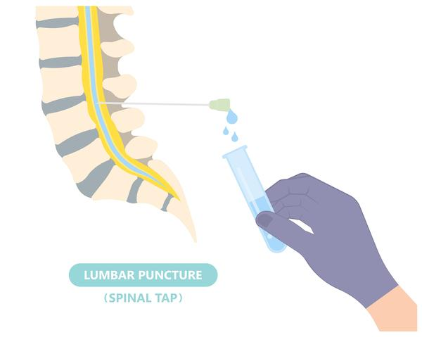
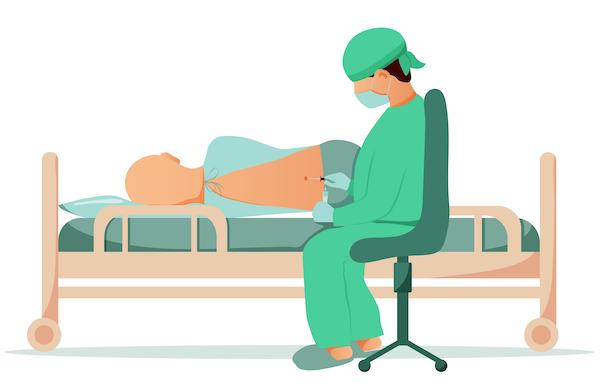

A spinal tap is also called a lumbar puncture. It is a test that helps the care team look at the fluid around your child’s brain and spinal cord. This fluid is called cerebrospinal fluid, or CSF.
During the procedure, a small needle is placed into the lower back to collect fluid. It is done below the spinal cord to prevent nerve injury. This fluid is tested. The fluid pressure may be measured. Sometimes, medicine is given through the needle during this test.
It is normal to feel nervous about your child having a spinal tap. However, this test can give important answers and help your child get the right care.
This guide will give you information about what to expect at each step. Ask as many questions as you need to. Your care team will support you in every way we can.

The test is done to help find the cause of:
Fever with confusion or seizures
Headaches that will not go away
Some infections, like meningitis
Certain cancers, like leukemia
Certain autoimmune diseases, like multiple sclerosis
Swelling or pressure around the brain
Sometimes, a spinal tap may be done to measure or relieve pressure around the brain, or to inject medicine or anesthesia.
This procedure is safe and routine, but there are some risks. Your child’s care team will take steps to reduce these risks.
Possible side effects may include:
Headache
Sore back where the needle went in
A small amount of bleeding or bruising
Severe problems after a spinal tap do not happen often, but the care team will watch your child closely.
Use short, clear words to explain the test. For example: “The care team needs to take a small sample of fluid from your back to help find out why you are not feeling well.”
Be honest. You can say, “You might feel a pinch or some pressure, but it will not last long.”
It is normal for children to feel nervous or scared. Let them know you will be nearby.
If your child is very young, talk about the test shortly before it happens. Older children can be told earlier and given more details.
Bring a favorite toy, stuffed animal, or blanket for comfort.
Your child may need to stop eating or drinking for a few hours before the procedure, especially if your care team will use sedation during the procedure.
The care team will explain the procedure and ask for consent, or permission.
Tell the care team about all medicines your child takes. Include prescription and over-the-counter medicines, vitamins, herbs, and supplements.
Tell the care team if your child has allergies, bleeding problems, or a history of seizures.
You may stay with your child if allowed.
Your child will lie curled on their side or sit leaning forward with someone helping to keep them very still.
The care team cleans the lower back to keep the area germ-free. They may use a cream or spray to numb the area. They may also inject a numbing medicine under the skin. The care team may give medicine to help your child relax or sleep if they are unable to stay still throughout the procedure.
A thin needle is placed in the lower spine, in the spinal canal but below the spinal cord, to collect fluid. This part may take a few minutes. The entire procedure may take 10 to 15 minutes.
Your child may feel pressure, but it should not be painful.

Your child may lie flat for up to 1 hour.
The care team will watch your child for any problems.
Most children can go home the same day.
At home, your child should rest and drink fluids.
A mild headache or backache may happen. It usually goes away in 1 to 2 days.

Why does my child need this test?
Are there alternatives to this test?
How will my child feel during and after the procedure?
How long will it take to get results?
Are there special instructions for care at home?
Whom can I call if I have more questions?
Call your care team if your child has:
A headache that is severe, lasts longer than 2 days, or gets worse when sitting or standing
Back pain or soreness that is severe or lasts longer than 2 days
Tingling, numbness, or weakness in the legs that does not go away
Changes in behavior, such as confusion, trouble waking up, or acting very sick
Clear fluid or constant bleeding from the needle site
Call if you have any questions or concerns about your child’s recovery.
Get help right away if your child has:
A seizure, or shaking or jerking movements
Trouble breathing or turns blue or pale
Sudden confusion or cannot wake up
Signs of a severe allergic reaction, including trouble swallowing or swelling of the face, lips, tongue, or throat
Sudden weakness in the legs or trouble walking
Vision changes or a sudden, severe headache with vomiting
Thank you for trusting us with your child’s care. We are here to support you and want you and your child to feel your best. Contact us with any questions.
IF YOU HAVE A MEDICAL EMERGENCY, CALL 911 OR GO TO THE EMERGENCY ROOM.
The information presented is intended for general information and educational purposes. It is not intended to replace the advice of your health care provider. Contact your health care provider if you believe you have a health problem.
Last updated May 2025
© 2025 Mytonomy, Inc. All rights reserved.